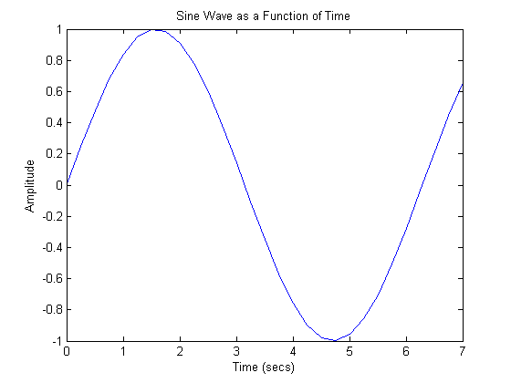
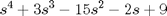
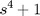

MATLAB Basics Tutorial
Key MATLAB commands used in this tutorial are: plot , polyval , roots , conv , deconv , inv , eig , poly , tf , zero
Contents
MATLAB is an interactive program for numerical computation and data visualization; it is used extensively by control engineers for analysis and design. There are many different toolboxes available which extend the basic functions of MATLAB into different application areas; in these tutorials, we will make extensive use of the Control Systems Toolbox. MATLAB is supported on Unix, Macintosh, and Windows environments; a student version of MATLAB is available for personal computers. For more information on MATLAB, please visit the MathWorks link at the top of the page.
The idea behind these tutorials is that you can view them in one window while running MATLAB in another window. You should be able to re-do all of the plots and calculations in the tutorials by cutting and pasting text from the tutorials into MATLAB or an m-file.
Vectors
Let's start off by creating something simple, like a vector. Enter each element of the vector (separated by a space) between brackets, and set it equal to a variable. For example, to create the vector a, enter the following into the MATLAB command window (you can Copy and Paste from your browser into MATLAB to make it easy) and MATLAB should return the following:
a = [1 2 3 4 5 6 9 8 7]
a =
1 2 3 4 5 6 9 8 7
Let's say you want to create a vector with elements between 0 and 20 evenly spaced in increments of two (this method is frequently used to create a time vector):
t = 0:2:20
t =
0 2 4 6 8 10 12 14 16 18 20
Manipulating vectors is almost as easy as creating them. First, suppose you would like to add 2 to each of the elements in the vector a. The equation for that looks like:
b = a + 2
b =
3 4 5 6 7 8 11 10 9
Now suppose, you would like to add two vectors together. If the two vectors are the same length, it is easy. Simply add the two as shown below:
c = a + b
c =
4 6 8 10 12 14 20 18 16
Subtraction of vectors of the same length works exactly the same way.
Functions
To make life easier, MATLAB includes many standard functions. Each function is a block of code that accomplishes a specific task. MATLAB contains all of the standard functions such as sin, cos, log, exp, sqrt, as well as many others. Commonly used constants such as pi, and i or j for the square root of -1, are also incorporated into MATLAB.
sin(pi/4)
ans =
0.7071
To determine the usage of any function, type help [function name] at the MATLAB command window.
MATLAB even allows you to write your own functions with the function command; follow the link to learn how to write your own functions and see a listing of the functions we created for this tutorial.
Plotting
It is also easy to create plots in MATLAB. Suppose you wanted to plot a sine wave as a function of time. First, make a time vector (the semicolon after each statement tells MATLAB we don't want to see all the values) and then compute the sin value at each time. The commands after the plot function (title, xlabel, ylabel) will add annotations to the plot.
t = 0:0.25:7; y = sin(t); plot(t,y) title('Sine Wave as a Function of Time') xlabel('Time (secs)') ylabel('Amplitude')
The plot contains approximately one period of a sine wave. Basic plotting is very easy in MATLAB, and the plot command has extensive add-on capabilities. I would recommend you visit the plotting page to learn more about it.
Polynomials as Vectors
In MATLAB, a polynomial is represented by a vector. To create a polynomial in MATLAB, simply enter each coefficient of the polynomial into the vector in descending order. For instance, let's say you have the following polynomial:
(1)
To enter this into MATLAB, just enter it as a vector in the following manner:
x = [1 3 -15 -2 9]
x =
1 3 -15 -2 9
MATLAB can interpret a vector of length n+1 as an nth order polynomial. Thus, if your polynomial is missing any coefficients, you must enter zeros in the appropriate place in the vector. For example,
(2)
would be represented in MATLAB as:
y = [1 0 0 0 1]
y =
1 0 0 0 1
You can find the value of a polynomial using the polyval function. For example, to find the value of the above polynomial at s = 2,
z = polyval([1 0 0 0 1],2)
z =
17
You can also extract the roots of a polynomial. This is useful when you have a high-order polynomial such as
(3)
Finding the roots would be as easy as entering the following command:
roots([1 3 -15 -2 9])
ans =
-5.5745
2.5836
-0.7951
0.7860
Let's say you want to multiply two polynomials together. The product of two polynomials is found by taking the convolution of their coefficients. MATLAB's function conv will do this for you.
x = [1 2]; y = [1 4 8]; z = conv(x,y)
z =
1 6 16 16
Dividing two polynomials is just as easy. The deconv function will return the remainder as well as the result. Let's divide z by y and see if we get x.
[xx, R] = deconv(z,y)
xx =
1 2
R =
0 0 0 0
As you can see, this is just the polynomial/vector x from before. If y had not gone into z evenly, the remainder vector would have been something other than zero.
Polynomials Using the s Variable
Another way to represent a polynomial is to use the Laplace variable s within MATLAB. This method is mainly used throughout these tutorials. Let's ignore the details of the Laplace domain for now and just represent polynomials with the s variable. To define the variable, type the following into the MATLAB command window:
s = tf('s')
s = s Continuous-time transfer function.
Recall the polynomial given above:
(4)
To represent this in MATLAB, type the following into the MATLAB command window:
polynomial = s^4 + 3*s^3 - 15*s^2 - 2*s + 9
polynomial = s^4 + 3 s^3 - 15 s^2 - 2 s + 9 Continuous-time transfer function.
Instead of using the roots function, we can use the zero function to find the roots of the polynomial.
zero(polynomial)
ans =
-5.5745
2.5836
-0.7951
0.7860
As you can see, the result is the same as above using the roots command and the coefficients of the polynomial.
You can also multiply two polynomials together using the s variable. Let's redefine x and y.
x = s + 2; y = s^2 + 4*s + 8; z = x * y
z = s^3 + 6 s^2 + 16 s + 16 Continuous-time transfer function.
The resulting polynomial has the same coefficients as the resulting vector from the conv function above.
Matrices
Entering matrices into MATLAB is the same as entering a vector, except each row of elements is separated by a semicolon (;) or a return:
B = [1 2 3 4; 5 6 7 8; 9 10 11 12]
B = [ 1 2 3 4
5 6 7 8
9 10 11 12 ]
B =
1 2 3 4
5 6 7 8
9 10 11 12
B =
1 2 3 4
5 6 7 8
9 10 11 12
Matrices in MATLAB can be manipulated in many ways. For one, you can find the transpose of a matrix using the apostrophe key:
C = B'
C =
1 5 9
2 6 10
3 7 11
4 8 12
It should be noted that if C has been complex, the apostrophe would have actually given the complex conjugate transpose. To get the transpose in this case, use .' (the two commands are the same if the matrix is not complex).
Now you can multiply the two matrices B and C together. Remember that order matters when multiplying matrices.
D = B * C D = C * B
D =
30 70 110
70 174 278
110 278 446
D =
107 122 137 152
122 140 158 176
137 158 179 200
152 176 200 224
Another option for matrix manipulation is that you can multiply the corresponding elements of two matrices using the .* operator (the matrices must be the same size to do this).
E = [1 2; 3 4] F = [2 3; 4 5] G = E .* F
E =
1 2
3 4
F =
2 3
4 5
G =
2 6
12 20
If you have a square matrix, like E, you can also multiply it by itself as many times as you like by raising it to a given power.
E^3
ans =
37 54
81 118
If you wanted to cube each element in the matrix, just use the element-by-element cubing.
E.^3
ans =
1 8
27 64
You can also find the inverse of a matrix:
X = inv(E)
X =
-2.0000 1.0000
1.5000 -0.5000
or its eigenvalues:
eig(E)
ans =
-0.3723
5.3723
There is even a function to find the coefficients of the characteristic polynomial of a matrix. The poly function creates a vector that includes the coefficients of the characteristic polynomial.
p = poly(E)
p =
1.0000 -5.0000 -2.0000
Remember that the eigenvalues of a matrix are the same as the roots of its characteristic polynomial:
roots(p)
ans =
5.3723
-0.3723
Printing
Printing in MATLAB is pretty easy. Just follow the steps illustrated below:
Macintosh
- To print a plot or a m-file from a Macintosh, just click on the plot or m-file, select Print under the File menu, and hit Return.
Windows
- To print a plot or a m-file from a computer running Windows, just select Print from the File menu in the window of the plot or m-file, and hit Return.
Unix
- To print a plot on a Unix workstation enter the command: print -P<printername>.
- If you want to save the plot and print it later, enter the command: print plot.ps.
- Sometime later, you could print the plot using the command lpr -P plot.ps If you are using a HP workstation to print, you would instead use the command lpr -d plot.ps.
- To print a m-file, just print it the way you would any other file, using the command lpr -P name of m-file.m. If you are using a HP workstation to print, you would instead use the command lpr -d plot.ps name of m-file.m.
Using m-files in MATLAB
There are slightly different things you need to know for each platform.
Macintosh
- There is a built-in editor for m-files; choose New M-file from the File menu. You can also use any other editor you like (but be sure to save the files in text format and load them when you start MATLAB).
Windows
- Running MATLAB from Windows is very similar to running it on a Macintosh. However, you need to know that your m-file will be saved in the clipboard. Therefore, you must make sure that it is saved as filename.m.
Unix
- You will need to run an editor separately from MATLAB. The best strategy is to make a directory for all your m-files, then cd to that directory before running both MATLAB and the editor. To start MATLAB from your Xterm window, simply type: matlab.
You can either type commands directly into MATLAB, or put all of the commands that you will need together in a m-file, and just run the file. If you put all of your m-files in the same directory that you run MATLAB from, then MATLAB will always find them.
Getting Help in MATLAB
MATLAB has a fairly good on-line help, type:
help commandname
for more information on any given command. You do need to know the name of the command that you are looking for; a list of the all the ones used in these tutorials is given in the command listing; a link to this page can be found at top right of this page.
Here are a few notes to end this tutorial.
You can get the value of a particular variable at any time by typing its name.
B
B =
1 2 3 4
5 6 7 8
9 10 11 12
You can also have more than one statement on a single line, so long as you separate them with either a semicolon or comma.
Also, you may have noticed that so long as you dont assign a variable a specific operation or result, MATLAB will store it in a temporary variable called ans.